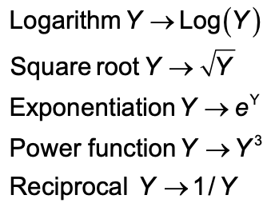

library(Stat2Data)
library(tidyverse)
data("Diamonds")
qplot(x = Color, y = TotalPrice, data = Diamonds, geom = "boxplot")Confidence Intervals and Effect Sizes
Announcements
- Grades will be posted for HW2 soon
- Solution sheet available on Moodle
- HW3 due tomorrow night
- Office hours (Bass 412)
- Today: 2:45p - 4:00p
- Friday: 10:50a - 12:05p
- Where to get HW help
- Spinelli center tutoring Sun-Thurs 7-9p, Sabin-Reed 301.
Agenda
- ANOVA Conditions
- Transformations
- Confidence intervals
- Effect sizes
- MP1 introduction
- topics time
Last time
How to check assumptions
C. Constant effects – think about whether it is reasonable.
A. Additive effects – think about whether it is reasonable.
S. Same standard deviations – is the biggest SD less than two times as large as the smallest?
I. Independent residuals – think about whether it is reasonable.
N. Normally distributed residuals – construct a histogram or normal probability plot of residuals.
Z. Zero mean residuals – construct a histogram or normal probability plot of residuals.
Try it!
Back in your groups of three, check or discuss the last 4 ANOVA assumptions: The SINZ.
Dataset 1: SandwichAnts
- Factor:
Bread - Response:
Ants
Dataset 2: Meniscus
- Factor:
Method - Response:
Displacement
Transformations: Example
Transformations: Example
Diamonds %>%
group_by(Color) %>%
summarise(n = n(),
m = mean(TotalPrice, na.rm = TRUE),
sd = sd(TotalPrice, na.rm = TRUE))# A tibble: 7 × 4
Color n m sd
<fct> <int> <dbl> <dbl>
1 D 52 5569. 4764.
2 E 82 4359. 3696.
3 F 87 9160. 10937.
4 G 86 9559. 7993.
5 H 29 8669. 6379.
6 I 12 7640. 5461.
7 J 3 1936. 737.10937/736 #Yikes![1] 14.86005Transformations: Example
qplot(x = Color, y = log(TotalPrice), data = Diamonds, geom = "boxplot")Common transformations
For the response (Y)…

How to transform
We can do the transformation directly in the visualization code:
qplot(x = Color, y = log(TotalPrice), data = Diamonds, geom = "boxplot")OR, we can create a new variable in the dataset
Diamonds <- Diamonds %>%
mutate(ln_TotalPrice = log(TotalPrice))
#Then, we use the new variable to make our visualization
qplot(x = Color, y = ln_TotalPrice, data = Diamonds, geom = "boxplot")When to use log transformation:
Look for:
- Distribution of response is skewed towards high end.
- The responses in one group (or more) range over two or more orders of magnitude.
- Variability varies across groups considerably, especially when the spread tracks with the mean.
Diagnostic plot to pick a transformation
Steps:
- Save the means and sd’s of groups in a little dataset.
- Make a scatterplot of log(sd) versus log(m) with a line of best fit.
- Your transformation will be the response raised to the power of 1-slope of that line.
Diagnostic plot to pick a transformation: Step 1
Save the means and sd’s of groups in a little dataset.
ds <- Diamonds %>%
group_by(Color) %>%
summarise(n = n(),
m = mean(TotalPrice),
sd = sd(TotalPrice))Diagnostic plot to pick a transformation: Step 2
Make a scatterplot of log(sd) versus log(m) with a line of best fit.
qplot(x = log(m), y = log(sd), data = ds) +
geom_smooth(method = lm, se = 0)Diagnostic plot to pick a transformation: Step 3
Your transformation will be the response raised to the power of 1-slope of that line.
lm(log(sd) ~ log(m), data = ds)
Call:
lm(formula = log(sd) ~ log(m), data = ds)
Coefficients:
(Intercept) log(m)
-4.447 1.480 Diagnostic plot to pick a transformation: Step 3
p = 1 - 1.480
qplot(x = Color, y = TotalPrice^p, data = Diamonds, geom = "boxplot")Try it for the Hawks!
library(Stat2Data)
data("Hawks")- Find a transformation that helps the heterogeneity of variance for Y = Weight and X = Species.
- Run the ANOVA (even if the issue is not completely fixed) and write a sentence interpretation of your ANOVA results.
Steps for finding a transformation:
- Save the means and sd’s of groups in a little dataset.
- Make a scatterplot of log(sd) versus log(m) with a line of best fit.
- Your transformation will be the response raised to the power of 1-slope of that line.
ANOVA for Diamonds
modDia <- lm(log(TotalPrice) ~ Color, data = Diamonds)
anova(modDia)Analysis of Variance Table
Response: log(TotalPrice)
Df Sum Sq Mean Sq F value Pr(>F)
Color 6 29.946 4.9909 7.3713 1.972e-07 ***
Residuals 344 232.913 0.6771
---
Signif. codes: 0 '***' 0.001 '**' 0.01 '*' 0.05 '.' 0.1 ' ' 1There are statistically significant differences in log price of diamonds across colors \(F(6, 344) = 7.37\), \(p < .001\).
But what else do we want to know??
Effect Sizes and Confidence Intervals
- The p-value for our F-ratio only tells us if effects are detectable.
- Answers the question: IS there an effect?
- Practical significance is different from statistical significance.
- Need to answer the question: How big is IT?
- Which values in ANOVA do we want to construct confidence intervals for (or calculate an effect size for)?
Some options:
- A specific group mean.
- How far away a specific condition is from the grand average (the treatment effect).
- How far away a specific condition is from another condition.
- How far away a specific condition (or set of conditions) is(are) from a(nother) set of conditions.
- Additional effect size option: The overall variance explained by a factor of interest.
Confidence Intervals for Difference Between two Groups
\[(\bar{y_i}-\bar{y_j}) \pm t^*\cdot SD \sqrt{1/n_i+1/n_j}\]
- Where \(SD = \sqrt{MSE}\).
- \(t^*\) depends on the confidence level and df of the error.
- \(Sample\:size\:factor = \sqrt{1/n_i+1/n_j}\), the larger the sample sizes, the narrower the interval.
- \(t({df}_{res})\) is the t-value the dictates distance of the interval.
Calculating CI between groups in R
\[(\bar{y_G}-\bar{y_F}) \pm t^*\cdot SD \sqrt{1/n_G+1/n_F}\]
For difference between G (near colorless) and F (colorless)
MSE = 0.6771 #from our ANOVA source table
df_E = 344 #from our ANOVA source table
t <- qt(.975, df_E) #for 95% CI
n_g = filter(ds, Color == "G")$n #sample size for G
n_f = filter(ds, Color == "F")$n #sample size for F
mean_g <- log(filter(ds, Color == "G")$m) #mean for G
mean_f <- log(filter(ds, Color == "F")$m) #mean for F
#Confidence interval
UL <- (mean_g-mean_f) + t*sqrt(MSE)*sqrt(1/n_g+1/n_f) #upper limit
LL <- (mean_g-mean_f) - t*sqrt(MSE)*sqrt(1/n_g+1/n_f) #lower limitCalculating CI between groups in R
For difference between G (near colorless) and F (colorless)
LL[1] -0.2035213UL[1] 0.2886875Sentence interpretation:
We are 95% confident that the true mean difference in (log) price between near colorless and colorless Diamonds is between -0.20 and 0.29.
Equivalence of Confidence Intervals and Tests
Two group means are statistically different at the 5% (1%) level if and only if a 95% (99%) confidence interval for their diffrence does not include 0.
Effect Size (D)
But how big is IT?
We can compare the differences between groups to to the standard deviation within all groups:
\[D_{ij} = \frac{(\bar{y_i}-\bar{y_j})}{SD}\]
- Where again \(SD = \sqrt{MSE}\)
Effect Size (D)
For difference between G (near colorless) and F (colorless)
D = (mean_g-mean_f)/sqrt(MSE)
D[1] 0.05175002The difference between the price of nearly colorless diamonds and colorless diamonds is only 0.052 times the size of the typical within-group deviations in price. Such a small difference!
R-squared for One-Way ANOVA
But how much does color matter overall?
\(R^2\) is the proportion of total variation explained by the factor:
\[R^2 = \frac{SS_{treatment}}{SS_{Total}}\]
OR
\[R^2 = 1-\frac{SS_{error}}{SS_{total}}\]
R-squared for Diamond Color
modDia <- lm(log(TotalPrice) ~ Color, data = Diamonds)
anova(modDia)Analysis of Variance Table
Response: log(TotalPrice)
Df Sum Sq Mean Sq F value Pr(>F)
Color 6 29.946 4.9909 7.3713 1.972e-07 ***
Residuals 344 232.913 0.6771
---
Signif. codes: 0 '***' 0.001 '**' 0.01 '*' 0.05 '.' 0.1 ' ' 1R2 = 29.946/(29.946+232.913)
R2[1] 0.1139242The \(R^2\) value is 0.11, so about 11% of the variation in the total price of a diamonds is explained by the diamonds’ colors.
Try it!
Use the SandwichAnts dataset to calculate the CI and effect size for difference between MultiGrain and Rye in number of Ants.